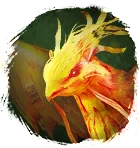
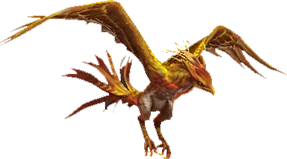

Открыть в интерактивной вики →

| Уровень | 65 |
|---|---|
| Прокачка | есть |
| Ранг в стае | 5 |
| Здоровье | 2000 |
| Мана | 1600 |
| Выносливость | 800 |
| Статистика | Уровень: 65, ранг: 5, здоровье: 2000, мана: 1600, выносливость: 800 |
Цена

Где взять
Покупается в Клетке гильдий 2
Выкуп
Выкуп за смерть:
8х Платина либо откат 4 часа
Платина либо откат 4 часа
8х
Платина либо откат 4 часаНавыки


Скины

Доп. информация
Требуемый уровень: 65
Цена: 2 000 000 золота и 400 платины
Покупка: II гильдейская клетка
Может получать опыт — ДА
Описание
 | Стихия огня на службе человека. Искрящаяся птица испепелит любого, кто посмеет поднять руку на её хозяина. Мечет огненные шары, прячется за огненным щитом и выжигает мозги каждому, кто осмелится с ней сразиться. Идеальное дополнение к персонажу ближнего боя. Атакует физически, издалека и ментально. Использует: Уязвимость к огню, Инкантация, Огненная сфера, Магическая искра, Метеорит, Огненный шар, Поджог. | |